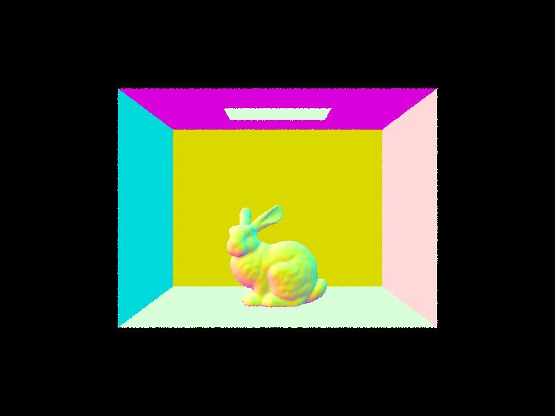

Overview
This is a class project of CS 184 Computer Graphics at UC Berkeley. In this project, we implement simple a ray tracer
Section I: Ray Generation and Scene Intersection
Part 1: Ray Generation
We first implement camera ray generation and sampling. Given a pixel (x,y), we sample from interval [x,x+1] x [y, y+1] as over sample point. Then the sampled cordinates is normalzed to interval [0,1] x [0,1] by dividing the cordinate with width and heigh of image. Given normalized cordinates (u,v), we generate ray from origin to \(p_0 + (u,v,0) * p_1 \), where \(p_0 = ( -\frac{tan(hFoV)}{2},-\frac{tan(vFoV)}{2},-1 ) \), \(p_1 = ( \frac{tan(hFoV)}{2},\frac{tan(vFoV)}{2},-1 ) \), and \(*\) is the element-wise product operator. This givens us the ray in camera cordinate. The last step is to transform this ray to world cordinate.
Part 2: Scene Intersection
We first implement triangle intersection, given ray \( r(t) = o + t d \) and triangle \(ABC\), we solve for \(r(t)=(1-b_1-b_2)A+b_1 B + b_2 C\). Linear algerba gives us a closed form solution for \(t,b_1,b_2\). There is an intersection if \(t\) is between the ray's \(t_{min}\) and \(t_{max}\), and \(1-b_1-b_2,b_1,b_2\) are within interval [0,1]. The normal vector at intersection is given by the interploatation of the vertex normal of vertices weighted by \(1-b_1-b_2,b_1,b_2\).We then implement sphere intersection. given ray \( r(t) = o + t d \) and sphere centered at \(c\) with radius \(R\), we solve for qudratic equation \( \lVert r(t)-c \rVert^2 = R^2 \) and find roots between the ray's \(t_{min}\) and \(t_{max}\). If there are multiple valid roots satisfying this condition, we find the closer of the two.
In both cases, we update the ray's \(t_{max} \) after identifying a intersection point, so colser intersection will not be overwritten by further ones.
Visualization
We show some results of normal rendered daes.|
|

|

|
Section II: Bounding Volume Hierarchy
Implementation Details
Exhaustive search can be time-consuming when the number of objects in a scene is very large. BVH accelerate this process by group objects in a scene into a binary tree. Each node tracks the bounding box of the set of objects represented by this node. The BVH intersection algorithms is performed recursively. If a ray does not intersect with the bounding box, we immediately terminates as there will be no intersection. Otherwise, we continue traversal. If the node is a leaf node, we check intersect for all primitives in the node. If it is not, then we check for intersection with all its children.
In this specific implementation, the split point is the mean of the centroids of all objects in the node. We split algong the axis with largest standard deviattion of centroid cordinates.
Visualization and analysis
We show some results of normal rendered large daes.|  |
| Scene | CBdragon | CBbunny | CBlucy | beetle | cow | teaport |
| BVN | 0.0852s | 0.0823s | 0.0887s | 0.0886s | 0.1042s | 0.0951s |
| no BVH | - | - | - | 20.5600s | 27.7549s | 9.9090s |
It is obvious that BVH leads to significant acceleration over the exhaustive search
Section III: Direct Lighting
We use Monte Carlo Integration to calculate the direct illumination for the given point. Given outboud angle \(w_o\) , hit point \(p\), and incoming ray distribution \( P\), we calculate
$$\frac{1}{N}\sum_{j=1}^{N}\frac{f_r(p,w_j\rightarrow w_o)L_i(p,w_j)cos \theta_j }{P(w_j)}$$ where \(f_r\) is the BRDF function.In uniform hemisphere sampling implementation, \(L_i\) is the emission of light if there is a ray going to the direction of \(w_j\) (in world cordinate) from \(p\) hit a light and 0 otherwise. \(P\) is the uniform distribution of a hemisphere.
In importance sampling implementation, we sample a point on the light and \(w_j\) is the direction from \(p\) to the sample point. \(L_i\) gives the light intensity if the light sample is not blocked. This is checked by shooting a ray from p to the sample point and see if it intersect other objects before the light. We get the final output by looping and summing over results from each light. If a light is a point light, we only sample once.
We visualize the difference between two sample methods
| Hemisphere | ||
| Importance |

|
|
|
|
|
|
It is clear that importance sampling lead to less noise over hemisphere sampling. And more samples per light leads to less noise
Section IV: Indirect Lighting
Indirect Lighting calculation is performed by tracing the bounces of sample rays and summing over the direct lightining at all hit points (taking into consideration of hit angle and bsdf of all intermediating surfaces). In particular, global illumination is defined by following recursive relation
$$AtLeastOneBounce(p,w_{o}) = DirectLighting(p,w_{o})+ AtLeastOneBounce(p',-w_j) f_r(p,w_j\rightarrow w_o) cos \theta_j $$ * This recursion reflects the implementation for one sample, the correct physical distribution requires integrating over distribution of \(w_j\)** In our implementation, the second term is divided by the probability density of \( w_j \) and a fixed continue probability for Monte Carlo integration.
*** This is added to zero bounce (i.e. emission) at p to produce the final image
Where \(w_j\) is the bounce direction sampled by a distribution dependent on the BSDF \(f_r\) and \(p'\) is the hit point of bounce rays
To prevent infinite recursion, we cap the max bounce of rays at a fixed constant. Additionally, at each iteration, there is a random probability that the recursive terminates. In which case the second term is not added.
We visualize some scenes with 1024 samples and indirect lighting
We compare a scene with only direct illumination and only in direct illumination.
|
|
|
We compare a scene with different ray depths (number of bounces).
|
|
|
|
|
|
We compare a scene with different samples per pixel
|
|
|
|
|
|
|
|
Generally, higher sample rates means less noise.
Section V: Indirect Lighting
While a high sample rate is important for noise-free rendering, high sample rates lead to longer rendering time. In order to speed up the rendering, we implement adapative sampling, which terminates the sampling process when it achieves a high confidence in current results.
In particular, we keep track of the running mean \(\mu\) and running variance \( \sigma^2\) of illuminance in each sample. We terminate when
$$ 1.96 \cdot \frac{\sigma}{\sqrt{n}} \le max\_tolerance \cdot \mu $$To keep track of running statistics, we keep track of the sum of illuminance \(s_1\) and sum of square of illuminace \(s_2\). We can recover the \(\mu\) and \(\sigma\) from
$$\mu = \frac{s_1}{n}$$ $$\sigma^2 = \frac{1}{n-1}(s_2-\frac{s_1^2}{n})$$To further reduce computation overhead, we only check termination condition once after samplesPerBatch samples.
We visualize the results of adapative sampling with a heatmap of sampling rates

|
||
|
|
|
|